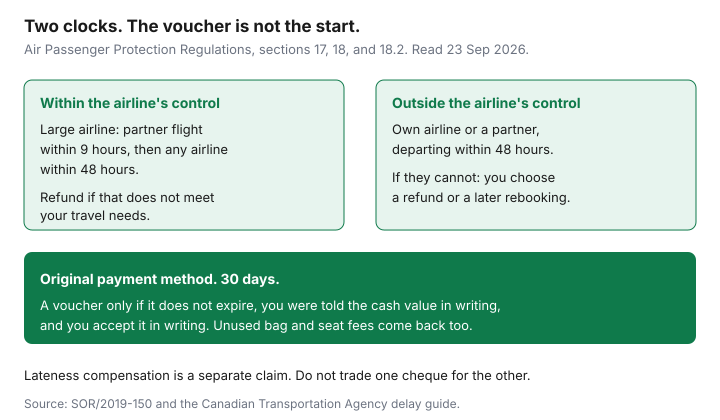

Travel · Canada
Flight Cancelled in Canada: Refund, Rebooking, or Voucher—What You Can Force
A cancellation notice arrives with a link to a voucher. The link is convenient for the airline. It is not the menu the regulations give you. On flights to, from, and within Canada, the Air Passenger Protection Regulations already decide when the airline must rebook you, when you may take the unused ticket back in money, and when a voucher is allowed at all. The work is knowing which disruption you are in, asking for the original payment method in writing, and keeping the trail until the 30 days run out.
This guide is the refund, the rebooking, and the voucher. The inconvenience amounts — large airlines $400, $700, or $1,000, small airlines $125, $250, or $500, and the voucher test that applies to that cheque — are the compensation claim guide. Do not mix the two cheques. A refund of the ticket you could not use is not the same payment as compensation for arriving late. Rules below are from the consolidated regulations and the Agency’s delay guide, read 23 Sep 2026. The text in force is SOR/2019-150, including the 2022 refund amendments.
Disclosure: Travel insurance and credit-card trip benefits are offer types only if you go looking for a new policy. This page does not rank insurers or cards. Saving Optimizer does not claim an insurance or airline partnership. Education only, not legal advice. For a dispute, the Agency’s process is the public path.
Key takeaways
- Within the airline’s control (and within control but required for safety): section 17 rebooking comes first. A large airline has a 9-hour partner test, then any airline within 48 hours. If the offer does not meet your needs, you may take a refund of the unused ticket.
- Outside the airline’s control: a confirmed seat on the airline or a partner that departs within 48 hours of the original departure. If they cannot provide that, you choose a refund or a further rebooking. You may choose the refund any time before they hand you a confirmed seat.
- The default refund is the original payment method, to the person who paid. A voucher is allowed only if it does not expire, you were told the cash value in writing, and you accept in writing.
- Unused bag fees, seat fees, and other add-ons come back with the unused ticket, and again if you were rebooked and never received them or had to buy them twice.
- The airline has 30 days from the day the refund is owed. Write everything down. A proposed 15-day clock is not what you can enforce today.
- Insurance and card trip-interruption benefits still matter for hotels, meals, and prepaid tours the regulations do not make the airline buy, especially when the cause is outside its control.
Rebooking and refund rights when disruption is within airline control
Start with the category. The Agency’s guide uses three: within the airline’s control, within the airline’s control but required for safety, and outside the airline’s control. Commercial decisions, including overbooking and scheduled maintenance, sit in the first. Safety issues the airline controls, such as a mechanical problem found before the flight, sit in the second. Weather, air-traffic orders, security, and a medical emergency sit in the third. The label on the app is not always the category. Keep the text they sent and what staff said at the gate. The compensation guide explains how to challenge a thin explanation. This section is what rebooking and refund look like once you know you are in the “within control” family, including the safety branch for alternate travel.
Section 17 of the regulations is the alternate-travel duty when the disruption is within the airline’s control or within its control for safety. The airline must get you to the ticketed destination as soon as feasible, at no charge.
- Large airline. First, a confirmed seat on the original airline or a partner, on any reasonable route, departing within nine hours of the original departure. If it cannot do that, a confirmed seat on any airline within 48 hours. If it still cannot, transportation to another airport within a reasonable distance and a seat from there on any airline.
- Small airline. A confirmed seat on the original airline or a partner. The nine-hour and “any airline” steps are large-airline duties. The Agency publishes the large-airline list. The compensation guide names the carriers on the list it used. Check that page if you are on a regional brand and someone is quoting the large-airline standard.
The new flight should be comparable, as far as possible. If they put you in a higher cabin, they cannot ask you to pay the difference. If they put you in a lower cabin, section 18.1 requires the fare difference back.
The refund is section 17(2). If the alternate arrangements do not accommodate your travel needs, the airline must refund the unused portion of the ticket. If you are no longer at your origin and the trip no longer serves a purpose, they refund the ticket and give you a flight back to that origin that meets your needs. “Does not accommodate my needs” is your travel purpose: a missed cruise embarkation, a wedding that was the whole point, a connection that arrives after the event. It is not a preference for a nonstop when a legal connection still gets you there the same day. Say the need in writing, with the time you had to be there.
Within-control disruptions can also owe inconvenience compensation if you were told 14 days or less before departure and you arrived three or more hours late, or if you took the refund instead of travelling. Those amounts, and how to file within one year, are the other guide. Ask for the refund and the compensation as two requests so one voucher cannot blur them.

Outside-control delays: the 48-hour partner-flight rule and when a refund is owed
Outside-control disruptions do not pay the inconvenience table. They still owe you a way to finish the trip or your money back. Section 18 is the rule, in force since the 2022 refund amendments. It applies to a cancellation, and to a delay once you have hit three hours, when the airline cannot complete your itinerary in a reasonable time.
The airline must offer, free of charge, a confirmed reservation on the next available flight operated by itself or by an airline it has a commercial agreement with, on any reasonable route, that departs within 48 hours of the departure time on your original ticket. That is the partner-flight test. A seat three days later on the same airline is not this offer.
If the airline cannot provide that reservation, the choice is yours:
- A refund of any unused portion of the ticket, or
- Further rebooking. A large airline must then look at any carrier, including from another airport within a reasonable distance, with transport to that airport. A small airline’s further rebooking stays on itself or a partner.
You may choose the refund at any time before they give you a confirmed reservation. You do not have to wait out the 48 hours in the terminal if it is already clear they have no partner flight inside the window. If you are no longer at your origin and the trip no longer serves a purpose, a refund comes with a flight back. A passenger who is offered a legal 48-hour partner flight and simply prefers a voucher-free refund “because I feel like it” is in a weaker spot: the regulation’s choice opens when they cannot make that 48-hour offer. Write down what they offered, the departure time, and the airline. A verbal “nothing until Thursday” is the fact you are preserving.
Standards of treatment — meals after two hours, a hotel if you are stuck overnight — apply to within-control and within-control-for-safety delays. They do not apply to outside-control events. Communication rules still apply. The hotel you pay yourself is why the insurance section at the end of this guide still matters on a weather day.
| Situation | What the airline must offer first | When a refund is the passenger’s right |
|---|---|---|
| Within control, or within control for safety | Section 17: large airline, partner within 9 hours, then any airline within 48 hours | The alternate flights do not meet your travel needs |
| Outside control, cancellation or 3-hour delay | Section 18: own airline or partner, departing within 48 hours of the original time | They cannot make that offer. You may choose the refund before a new seat is confirmed. |
| You are not at home and the trip is pointless | Same duties | Refund plus a flight back to origin |
Always ask for original payment method—voucher is optional, not default
Section 18.2 covers refunds under the regulations, whether the money is the ticket or an additional service. The airline pays the person who bought the ticket or the service, using the method used for the original payment. A return to the card is the ordinary case. Cash, cheque, and transfer follow whatever you used.
Another form, including a travel voucher, is allowed only when all three of these are true:
- You have been told in writing the monetary value of the original ticket or service, and that a refund by the original method is available.
- The other form does not expire.
- You confirm in writing that you were told about the original method and that you are choosing the other form anyway.
A voucher that expires, a voucher that was the only button in the app, or a voucher you accepted because the agent said “this is how refunds work” fails the test. Reply, while you still have the boarding pass, with one sentence: you want the refund on the original card, you do not accept a voucher, and you want written confirmation. If you already tapped the voucher by mistake, write the same sentence and keep the screenshot of what the screen failed to disclose. The Agency’s guide tells passengers to go to the airline in writing first.
This test is the refund test. The compensation guide has a cousin test for inconvenience money: the voucher has to be worth more than the cash, it cannot expire, and you accept it in writing. Read which cheque they are offering. Do not sign away the ticket refund while discussing the lateness payment, or the reverse.
Unused add-ons (bags, seats) must be refunded with the ticket under APPR rules
The Agency’s refund FAQ says the refund covers the unused portion of the ticket, including unused add-on services you paid for. A bag you prepaid and never checked, and a seat fee for a flight that did not operate, are part of that unused portion. Ask for them by name and amount. A refund of the base fare that is silent on a $45 bag and a $35 seat is an incomplete refund.
Section 18.1 covers the rebooking case, including when you do travel. If you were given alternate arrangements under section 17 or 18, the airline must refund additional services you did not receive, or that you had to pay for a second time on the new flight. A seat you bought on the cancelled flight, which does not exist on the new flight, comes back. A bag fee charged again because the new carrier did not see the first payment comes back. If the new seat is a lower class of service, the difference in the fare comes back too. A higher class does not cost you more.
Keep the original receipt that shows the add-on. The confirmation email is enough. You should not need a forensic reconstruction. Name the amounts in the refund request so a partial credit is obvious.
Timeline: airline has 30 days to refund; document every request
Section 18.2(2): the airline provides the refund within 30 days after the day it becomes obligated to pay it. The Agency’s guide repeats the 30 days regardless of format, including where a lawful voucher was chosen. The clock is not “30 days after you feel like complaining.” It starts when the obligation exists: you qualified for the refund and you asked, or the rule required it. Write the date you asked.
A Canada Gazette proposal in December 2024 discussed shortening refunds to 15 days. That was a proposal. The consolidated regulation still says 30 days. Do not plan your credit-card payment around a clock that is not in force. Do not let an airline stretch past 30 because a future amendment might change the number.
The file, started at the airport and finished the same day:
- The original itinerary, the cancellation notice, and any text that names a cause.
- What rebooking was offered, on which airline, departing when. A photo of the app is fine.
- Your written choice: refund to the original card, no voucher, plus the add-on amounts.
- Every reply, including “we issued a credit.”
- The date 30 days out, in a calendar, not in your head.
If the 30 days pass in silence, or the reply is a voucher you did not accept, the Agency’s instruction is the same as for compensation complaints: you have already contacted the airline in writing, and you can now file with the Canadian Transportation Agency. The compensation guide walks through that second step for the lateness claim. Use it for the refund file too. You are not starting over, and you are not required to buy a claims service to ask for your own ticket back.
When travel insurance or credit-card trip interruption still helps after APPR
APPR is a floor on the airline. It is not a travel policy. The gaps that show up in real cancellations:
- Hotels and meals on an outside-control day. The airline does not owe the standard of treatment. A storm that strands you overnight is your hotel unless a policy covers trip interruption or travel delay. Read the hour threshold. Many policies pay only after a set number of hours.
- Prepaid hotels, tours, and cruises you missed because the flight died and the refund of the airline ticket does not refund the resort. Interruption coverage is the product that talks about unused prepaid expenses. Cancellation-for-any-reason is a different, usually pricier, product. Compare the trigger with your actual risk.
- A credit-card trip benefit you already pay for. Some cards include interruption or delay coverage when the fare was charged to the card. Read the certificate: the cap, the delay that qualifies, and whether basic fares are excluded. If the benefit is real, use it. If you do not have it, this page will not send you to open a card.
- Medical care while you are stuck, or on the trip you still take. That is not an interruption benefit. The buying method is the Insurance guide, provincial plans abroad. Do not re-learn the daily caps here. Add the premium to the trip sheet and keep the policy number with the refund file.
Buy insurance for the costs the regulation leaves with you. Use the regulation for the ticket, the add-ons, and the rebooking. Ask for the card, not the voucher, and count to 30 days in writing.
Sources & date stamps
- Air Passenger Protection Regulations, SOR/2019-150, consolidated — sections 17, 18, 18.1, and 18.2 (alternate travel, outside-control 48-hour rule, additional services, original form of payment, 30-day refund). Used 23 Sep 2026.
- Canadian Transportation Agency, “Flight Delays and Cancellations: A Guide,” and the refund FAQ on the 2022 amendments — passenger choice, original payment method, unused add-ons, 30 days. Used 23 Sep 2026.
- Canada Gazette, Part I, 21 Dec 2024 — proposal to move the refund deadline to 15 days. Cited only to show it is not the rule in force.
- Inconvenience compensation amounts and the one-year filing clock are covered in the companion claim guide, not restated as the subject of this page.
Frequently asked questions
If Air Canada or WestJet cancels my flight, can I demand a refund?
Sometimes immediately, and sometimes only after the rebooking duty is tested. When the disruption is within the airline’s control, the airline must offer alternate flights under section 17 of the Air Passenger Protection Regulations. If those flights do not meet your travel needs, you can take a refund of the unused ticket. When the cause is outside the airline’s control, the airline must first offer a seat on itself or a partner departing within 48 hours of your original departure. If it cannot, you choose a refund or a further rebooking.
Do I have to accept a voucher?
No. Section 18.2 says refunds go to the purchaser by the original payment method unless three things are true: you were told in writing the value and that the original method is available, the other form does not expire, and you confirm in writing that you are choosing it. A voucher pressed at the gate, with none of that, is not the end of the refund.
Are bag and seat fees refunded too?
Unused add-ons are part of the refund the Canadian Transportation Agency describes. Section 18.1 also requires a refund of additional services you bought and did not receive, or paid for a second time, when you are rebooked under section 17 or 18. A downgrade in cabin requires the difference back.
How long does the airline have to refund me?
30 days after the day the airline becomes obligated to provide the refund. That is the rule in force. A proposal to shorten it to 15 days has been published; it is not the law you can demand today. Keep every email and screenshot.
Does travel insurance still matter if APPR applies?
Yes, for costs APPR does not pay. Outside-control disruptions do not require the airline to buy you a hotel or a meal. A trip-interruption policy, or a credit-card benefit you already hold, can cover extra hotels and prepaid tours. Medical cover is a separate Insurance guide. This page does not rank cards or policies.